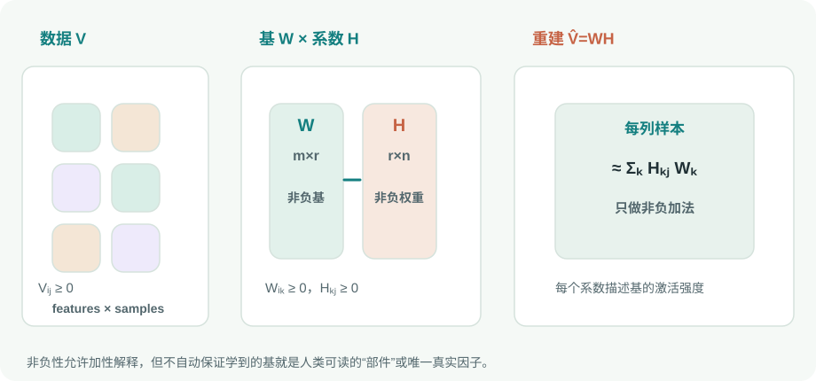
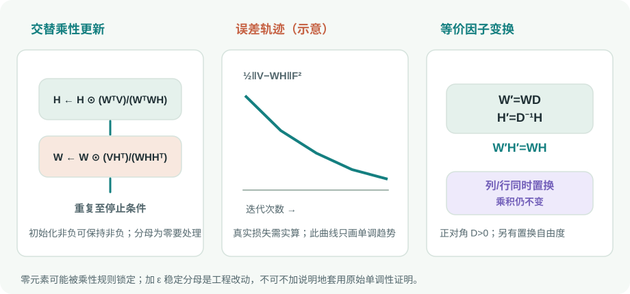

01 / NMF：用非负基向量加性重建非负数据
非负矩阵分解（NMF）寻找两个非负矩阵 W、H，使非负数据矩阵 V 可由少量基向量的非负组合近似。它不同于 SVD：SVD 追求正交方向和全局最优低秩逼近，NMF 将非负约束作为先验，使每个样本只能通过非负权重叠加基向量。
本页采用 V∈R₊^{m×n}（行是特征、列是样本）、W∈R₊^{m×r}（列为基向量）、H∈R₊^{r×n}（列为样本系数）的约定，且通常 r≪min(m,n)。于是 V≈WH。scikit-learn 常用样本×特征的输入布局，返回的两个因子形状与这里的 V 方向相反，使用时要先核对维度。

非负性可以帮助产生稀疏、加性或局部化表示，但“parts-based”是数据和目标共同产生的经验性解释，不是 NMF 定理保证的语义结论。不同初始化和正则化可能给出完全不同的基。
02 / 目标函数：先说明优化的是哪一种误差
最常见的目标是平方 Frobenius 重建误差。固定 W 时，H 的子问题是非负最小二乘；固定 H 时，W 的子问题也一样。联合优化 W、H 却是非凸问题，因为 WH 对两个因子联合而言是双线性的。
对计数型或稀疏数据，也可使用广义 KL 散度；对正值谱幅度，有时使用 Itakura–Saito 散度。不同损失对应不同更新公式和统计假设，不能把平方误差的乘性更新直接说成 KL 或 IS 目标的更新。
正则项也很重要：对 H 加 L1 惩罚会鼓励稀疏激活，对 W/H 加 L2 惩罚会抑制过大因子。实际模型还需说明样本尺度、是否做行列归一化、秩 r 如何选择以及是否固定一个因子。
03 / 乘性更新：保持非负的逐元素迭代
对平方 Frobenius 目标，两个因子的梯度为 ∇H=WᵀWH−WᵀV、∇W=WHHᵀ−VHᵀ。Lee–Seung 乘性更新把梯度中的正负部分组成逐元素比例，交替更新 H 与 W：
若初值严格非负且分母正，乘法更新会保持非负；经典平方误差规则有目标不增的辅助函数证明。但若某个元素初始为零，它可能永远保持零（zero-locking）；实现常加入小正数初始化或分母稳定项 ε。加 ε 是工程修改，不能不加说明地把原始单调性证明原封不动套过来。

04 / ALS 与坐标下降：每个子问题凸，不代表联合问题凸
交替最小二乘（ALS）固定 W，精确或近似求解非负最小二乘子问题得到 H；再固定 H 更新 W。每个子问题是凸的，但 W、H 联合目标依然非凸。若每个子问题都被精确求解，目标不会上升；但算法仍可能停在不同的局部驻点，且迭代成本取决于求解器。
常见实现包括主动集非负最小二乘、坐标下降、HALS（hierarchical alternating least squares）和乘性更新。scikit-learn 的 NMF 提供 coordinate-descent（CD）和 multiplicative-update（MU）求解器；MU 还能配合不同 beta-divergence。不能笼统宣称 ALS 总比乘性更新快几个数量级，速度取决于矩阵规模、秩、稀疏度和停止容差。
05 / 可辨识性：非负分解为什么不自动唯一？
即使 V=WH 精确成立，只要 D 是正对角矩阵，就有 V=(WD)(D⁻¹H)；同时交换 W 的列与 H 的对应行，也不改变乘积。因此尺度与置换歧义是结构性的。除此之外，还可能存在不等价的其他分解。NMF 一般不具有自动可辨识性，恢复真实因子需要额外几何或统计条件。
可解释性还受秩 r、初始化、正则化、数据预处理和样本分布影响。若每列表示文档、每行表示词，W 的列可以解释为词-主题权重，H 的列可以解释为文档-主题强度；这些解释需要结合词项和稳定性分析，而不能仅凭非负数值就断言一个因子是“真实主题”。
| 性质 | NMF 自动保证吗？ | 说明 |
|---|---|---|
| W、H 非负 | 是（按约束求解） | 算法需保持可行性 |
| 乘积近似 V | 由目标优化 | 误差由损失衡量 |
| 全局最优 | 否 | 联合问题非凸 |
| 因子唯一 | 否 | 存在尺度、置换及其他歧义 |
| 语义部件 | 否 | 需要数据与先验支持 |
06 / 应用：主题、谱分解与非负观测
主题建模可将词-文档计数矩阵分解为词-主题基和主题-文档权重；音频处理中常对非负幅度谱图做 NMF，W 表示频谱模板、H 表示随时间变化的激活；图像分解则可在非负像素或光谱数据上学习加性基。幅度谱丢失相位，重建波形还需额外相位估计或一致性处理。
如果数据含负值，不能直接把 NMF 当成无约束替代品；应先确认是否有物理意义的非负表示，或选择允许符号的模型。对推荐系统中的评分，非负约束是否合理也取决于评分尺度与偏置模型，不应把“预测非负”视为普遍优势。
07 / 复算：一轮乘性更新是否保持非负并降低损失？
V=[[2.,1.,0.],[1.,2.,1.],[0.,1.,2.]]
W=[[1.,.2],[.2,1.],[.5,.5]]
H=[[1.,.5,.2],[.2,.5,1.]]
def mm(A,B):
return [[sum(A[i][k]*B[k][j] for k in range(len(B)))
for j in range(len(B[0]))] for i in range(len(A))]
def tr(A): return [list(row) for row in zip(*A)]
def loss(W,H):
R=mm(W,H)
return .5*sum((V[i][j]-R[i][j])**2
for i in range(3) for j in range(3))
def hadamard_ratio(A,N,D):
return [[A[i][j]*N[i][j]/D[i][j]
for j in range(len(A[0]))] for i in range(len(A))]
before=loss(W,H)
Wt=tr(W)
H=hadamard_ratio(H,mm(Wt,V),mm(mm(Wt,W),H))
Ht=tr(H)
W=hadamard_ratio(W,mm(V,Ht),mm(mm(W,H),Ht))
after=loss(W,H)
assert before > after
assert all(x>=0 for row in W+H for x in row)
assert abs(before-3.0666)<1e-10
assert abs(after-1.09663175479187)<1e-10
print("Frobenius loss:",before,"->",after)预期损失从 3.066600 降到约 1.096632，且所有因子元素仍非负。这只验证该初始化的一次更新；不能据此证明全局最优、因子唯一或对其他初始化也有相同下降幅度。
参考资料与进一步阅读
- Lee & Seung (2001), Algorithms for Non-negative Matrix Factorization
- scikit-learn NMF：目标函数、CD/MU 求解器与 beta divergence
- Gillis, Nonnegative Matrix Factorization：identifiability and algorithms
- Pan & Doshi-Velez (2016), A Characterization of the Non-Uniqueness of NMF
矩阵维度与向量化约定在本页固定为实数域、列优先 vec；复数情形将转置替换为共轭转置。